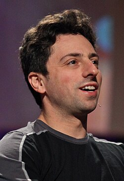
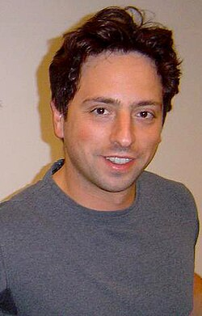

Sergey Brin
Source: https://en.wikipedia.org/wiki/Sergey_Brin
Category: founders_and_leaders
Depth: 1
Summary
Sergey Mikhailovich Brin is an American computer scientist and businessman who co-founded Google with Larry Page. He was the president of Google's parent company, Alphabet Inc., until stepping down from the role on December 3, 2019. He and Page remain at Alphabet as co-founders, controlling shareholders, and board members. Brin is a centibillionaire and among the richest people in the world.
Images




Full Article
American computer scientist (born 1973)
Sergey Mikhailovich Brin (Russian: Сергей Михайлович Брин; born August 21, 1973) is an American computer scientist and businessman who co-founded Google with Larry Page. He was the president of Google's parent company, Alphabet Inc., until stepping down from the role on December 3, 2019. He and Page remain at Alphabet as co-founders, controlling shareholders, and board members. Brin is a centibillionaire and among the richest people in the world.
Brin immigrated to the United States from the Soviet Union at the age of six. He earned his bachelor's degree at the University of Maryland, College Park, following in his father's and grandfather's footsteps by studying mathematics as well as computer science. After graduation, in September 1993, he enrolled in Stanford University to pursue a PhD in computer science. There he met Page, with whom he built a web search engine. The program became popular at Stanford, and he discontinued his PhD studies to start Google in Susan Wojcicki's garage in Menlo Park.
In December 2023, he came out of retirement to contribute to AI research at Alphabet Inc..
Early life and education
Sergey Mikhailovich Brin was born into a Jewish family on August 21, 1973, in the Russian capital of Moscow. At the time, Russia, known as the Russian Soviet Federative Socialist Republic, was a constituent republic of the Soviet Union. Both of Brin's parents, Mikhail and Eugenia Brin (1948–2024), had graduated from Moscow State University (MSU). His father is a retired mathematics professor at the University of Maryland, and his mother was a researcher at NASA's Goddard Space Flight Center.
The Brin family lived in a three-room apartment in central Moscow, which they also shared with Sergey's paternal grandmother. In 1977, after returning from a mathematics conference in Warsaw, Poland, Mikhail announced that, because of antisemitism in the Soviet Union, it was time for the family to emigrate. They formally applied for their exit visa in September 1978, and as a result, his father was "promptly fired". For related reasons, his mother had to leave her job. For the next eight months, without any steady income, they were forced to take on temporary jobs as they waited, afraid their request would be denied as it was for many refuseniks. In May 1979, they were granted their official exit visas and were allowed to leave the country.
The Brin family lived in Vienna and Paris while Mikhail Brin secured a teaching position at the University of Maryland with help from Anatole Katok. During this time, the Brin family received support and assistance from the Hebrew Immigrant Aid Society. They arrived in the United States on October 25, 1979.
He attended Eleanor Roosevelt High School. In September 1990, Brin enrolled in the University of Maryland, where he received his Bachelor of Science from the Department of Computer Science in 1993 with honors in computer science and high honors in mathematics at the age of 19. In 1993, he interned at Wolfram Research, the developers of Mathematica.
Brin began his graduate study in computer science at Stanford University on a graduate fellowship from the National Science Foundation, receiving a Master of Science degree in computer science in 1995. As of 2008[update], he was on leave from his Doctor of Philosophy studies at Stanford.
Search engine development
During an orientation for new students at Stanford, he met Larry Page. The two men seemed to disagree on most subjects, but after spending time together they "became intellectual soul-mates and close friends." Brin's focus was on developing data mining systems while Page's was on extending "the concept of inferring the importance of a research paper from its citations in other papers". Together, they authored a paper titled "The Anatomy of a Large-Scale Hypertextual Web Search Engine".
To convert the backlink data gathered by Backrub's web crawler into a measure of importance for a given web page, Brin and Page developed the PageRank algorithm, and realized that it could be used to build a search engine far superior to those existing at the time. The new algorithm relied on a new kind of technology that analyzed the relevance of the backlinks that connected one Web page to another, and allowed the number of links and their rank, to determine the rank of the page. Combining their ideas, they began utilizing Page's dormitory room as a machine laboratory, and extracted spare parts from inexpensive computers to create a device that they used to connect the nascent search engine with Stanford's broadband campus network.
After filling Page's room with equipment, they then converted Brin's dorm room into an office and programming center, where they tested their new search engine designs on the web. The rapid growth of their project caused Stanford's computing infrastructure to experience problems.
Page and Brin used Page's basic HTML programming skills to set up a simple search page for users, as they did not have a web page developer to create anything visually elaborate. They also began using any computer part they could find to assemble the necessary computing power to handle searches by multiple users. As their search engine grew in popularity among Stanford users, it required additional servers to process the queries. In August 1996, the initial version of Google was made available on the Stanford Web site.
- By early 1997, the Backrub page described the state as follows:
-
: Some Rough Statistics (from August 29, 1996)
: Total indexable HTML urls: 75.2306 Million
: Total content downloaded: 207.022 gigabytes
: ... -
: BackRub is written in Java and Python and runs on several Sun Ultras and Intel Pentiums running Linux. The primary database is kept on a Sun Ultra series II with 28GB of disk. Scott Hassan and Alan Steremberg have provided a great deal of very talented implementation help. Sergey Brin has also been very involved and deserves many thanks.
: - Larry Page pagecs.stanford.edu
BackRub already exhibited the rudimentary functions and characteristics of a search engine: a query input was entered and it provided a list of backlinks ranked by importance. Page recalled: "We realized that we had a querying tool. It gave you a good overall ranking of pages and ordering of follow-up pages." Page said that in mid-1998 they finally realized the further potential of their project: "Pretty soon, we had 10,000 searches a day. And we figured, maybe this is really real."
Some compared Page and Brin's vision to the impact of Johannes Gutenberg, the inventor of modern printing:
In 1440, Johannes Gutenberg introduced Europe to the mechanical printing press, printing Bibles for mass consumption. The technology allowed for books and manuscripts—originally replicated by hand—to be printed at a much faster rate, thus spreading knowledge and helping to usher in the European Renaissance ... Google has done a similar job.
The comparison was also noted by the authors of The Google Story: "Not since Gutenberg ... has any new invention empowered individuals, and transformed access to information, as profoundly as Google." Also, not long after the two "cooked up their new engine for web searches, they began thinking about information that was at the time beyond the web," such as digitizing books and expanding health information.
Other roles and interests
In June 2008, Brin invested $4.5 million in Space Adventures, a Virginia-based space tourism company.
Brin and Page jointly own a customized Boeing 767–200 and a Dassault/Dornier Alpha Jet, and pay $1.3 million a year to house them and two Gulfstream V jets owned by Google executives at Moffett Federal Airfield. The aircraft has scientific equipment installed by NASA to allow experimental data to be collected in flight.
Brin is a backer of LTA Research & Exploration LLC, an airship maker company. In October 2023, LTA's 124-meter long flagship, Pathfinder 1, became the largest airship since the Hindenburg to receive clearance for flight testing, permitted over the boundaries of Moffett Field and neighboring Palo Alto Airport's airspaces, at a height of up to 460 meters.
In 2026, Brin was appointed to the President's Council of Advisors on Science and Technology (PCAST) by President Donald Trump.
Personal life
Brin was raised Jewish, but is not religious.[better source needed]
In May 2007, Brin married biotech analyst and entrepreneur Anne Wojcicki in the Bahamas. They had a son in late 2008 and a daughter in late 2011. In August 2013, it was announced that Brin and his wife were living separately after Brin had an extramarital affair with a Google Glass colleague. In June 2015, Brin and Wojcicki finalized their divorce.
On November 7, 2018, he married Nicole Shanahan, a legal tech founder. They have a daughter, born in late 2018. Brin and Shanahan separated on December 15, 2021, and Brin filed for divorce on January 4, 2022. In summer 2023, the divorce was finalized. The Wall Street Journal reported that a reason for the breakup was a "brief affair" in 2021 between Shanahan and Elon Musk.
Brin's mother, Eugenia, has been diagnosed with Parkinson's disease. In 2008, he decided to make a donation to the University of Maryland School of Medicine, where his mother has received treatment. According to Forbes, Brin has donated over $1 billion to fund research on the disease.
Brin and Wojcicki, although separated, jointly ran The Brin Wojcicki Foundation until 2014. Since then, Brin has used the Sergey Brin Family Foundation and a donor-advised fund for his philanthropic giving. They donated extensively to The Michael J. Fox Foundation and in 2009 gave $1 million to support the Hebrew Immigrant Aid Society.
Brin is a donor to Democratic Party candidates and organizations, having donated $5,000 to Barack Obama's 2012 reelection campaign and $30,800 to the DNC. Brin attended the second inauguration of Donald Trump, sitting alongside Donald Trump supporters and other tech moguls. In December 2025, Brin and Page, worth a combined $520 billion, terminated or moved out of California sixty limited liability companies that hold their assets.
Brin is the owner of the superyacht Dragonfly.
Awards and accolades
2002–2009
- In 2002, Brin, along with Larry Page, was named in the MIT Technology Review TR100, as one of the top 100 innovators in the world under the age of 35.
- In 2003, both Brin and Page received an honorary MBA from IE Business School "for embodying the entrepreneurial spirit and lending momentum to the creation of new businesses...".
- In 2003, Brin and Page were both Award Recipients and National Finalists for the EY Entrepreneur of the Year Award.
- In 2004, they received the Marconi Prize, and were elected Fellows of the Marconi Foundation. The two men were "cited for the invention that has fundamentally changed the way information is retrieved today."
- In 2004, Brin received the American Academy of Achievement's Golden Plate Award with Larry Page at a ceremony in Chicago, Illinois.
- In 2006, Brin was one of the inaugural class of winners of the Great Immigrants Award named by Carnegie Corporation of New York.
Since 2009
- In November 2009, Forbes named Brin and Page the fifth most powerful people in the world.
- Earlier that same year, in February, Brin was inducted into the National Academy of Engineering, which is "among the highest professional distinctions accorded to an engineer ... [and] honors those who have made outstanding contributions to engineering research, practice...". He was selected specifically, "for leadership in development of rapid indexing and retrieval of relevant information from the World Wide Web".
- In their "Profiles" of Fellows, the National Science Foundation included a number of earlier awards:
he was a featured speaker at the World Economic Forum and the Technology, Entertainment and Design Conference. ... PC Magazine has praised Google in the Top 100 Web Sites and Search Engines (1998) and awarded Google the Technical Excellence Award, for Innovation in Web Application Development in 1999. In 2000, Google earned a Webby Award, a People's Voice Award for technical achievement, and in 2001, was awarded Outstanding Search Service, Best Image Search Engine, Best Design, Most Webmaster Friendly Search Engine, and Best Search Feature at the Search Engine Watch Awards.
- As of September 2024, Brin is the tenth-richest person in the world according to Bloomberg, with an estimated net worth of $135 billion.
Appearances in film
| Year | Title | Role |
|---|---|---|
| 2013 | The Internship | Himself (cameo) |
See also
List of people named in the Epstein files
Notes and references
Notes
References
External links
Sergey Brin at Wikipedia's sister projects
 Media from Commons
Media from Commons-
 Quotations from Wikiquote
Quotations from Wikiquote - Appearances on C-SPAN
- Sergey Brin on Charlie Rose
| - v - t - e Alphabet Inc. | |
|---|---|
| Subsidiaries | |
| People | |
| - Category - Companies portal - icon Internet portal |
| - v - t - e Google | |
|---|---|
| a subsidiary of Alphabet | |
| Company | |
| Development | |
| Software | |
| Hardware | |
| - v - t - e Litigation | |
| Related | |
| Italics denote discontinued products. - Category - Outline |
| Authority control databases Edit this at Wikidata | |
|---|---|
| International | - ISNI - VIAF - GND - FAST - WorldCat |
| National | - United States - Czech Republic - Spain - Netherlands - Latvia - Greece - Poland - Israel |
| Academics | - Association for Computing Machinery - DBLP |
| People | - DDB |
| Other | - IdRef - Yale LUX |


{kind=link}